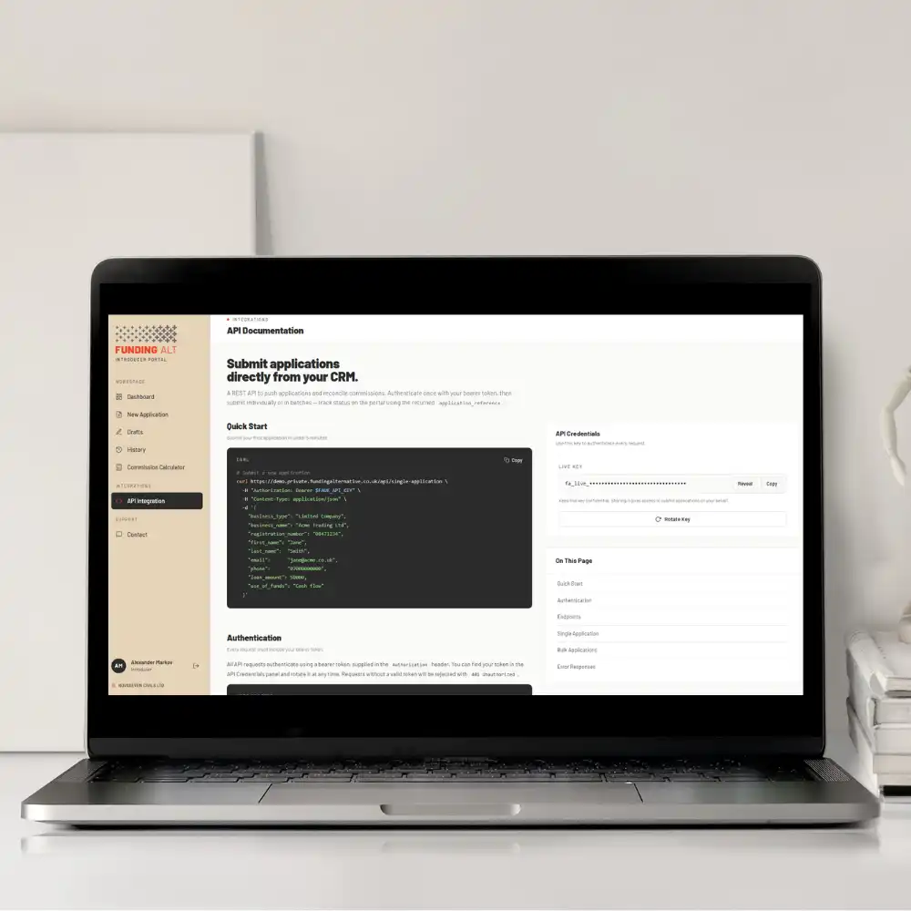

Faster submissions. Faster updates. Faster decisions.
As an introducer, speed matters.
Your clients want answers quickly. You need visibility without the back-and-forth.
That’s why we’ve launched the new Funding Alternative Introducer Portal.
Built to simplify deal placement, the portal brings applications, documents, updates, and commissions together in one place.
The result is a smoother experience and faster decisions, within four hours of submitting complete information.
Frictionless Funding
Working with a lender should feel straightforward.
As deal flow increases, the friction can often follow. Email chains. Missing documents. Unclear status updates.
This portal creates a better flow.
Everything now sits in one place. Applications. Documents. Updates. Commissions.
Less chasing. Less uncertainty. More capacity.

Simple Pipeline Control for Introducers
Whether you’re submitting a single deal or managing a full pipeline, the Introducer Portal will help you to move quickly and stay informed.
You can:
- Submit applications quickly and securely.
- Track progress in real time.
- Upload and manage documents in one place.
- Monitor funded and declined deals.
- View commission information instantly.
- Communicate through a structured contact interface.
Decisions in Under 4 Hours—and More Benefits
| Fast decision-making. | |
| Get the “Go” or “No” within 4 hours—sometimes as fast as 30 minutes. | |
| Underpinned by: | |
| Real-time pipeline tracking. | Instant commission visibility. |
| See exactly where every application sits, from pre-check through to decision. | Know what you’ve earned without waiting for updates or statements. |
| Digital brokerage onboarding. | Full deal history and performance insights. |
| Complete agreements directly in the portal. No paperwork delays. | Review funded deals, declines, and commission history in one place. |
| Real-time notifications. | A redesigned experience. |
| Stay updated as applications move through underwriting. | Cleaner layout. Faster navigation. Less effort to get things done. |
Disciplined Underwriting. Consistent Execution.
At Funding Alternative, every decision is grounded in structured credit judgment and real-time financial data.
Our underwriting is built on Open Banking insight, experienced credit assessment, and a consistent internal framework that holds across all products.
That combination delivers consistency at pace.
It allows us to make fast, informed decisions without compromising on accuracy or control.
The technology, underwriting, and operational processes work together as one system.
The result is consistent execution and reliable performance.
Get Started
The new Funding Alternative Introducer Portal is live.
If you’re looking for a faster, more transparent way to place deals and track progress, join us.
Register on the Introducer Portal today
Need more information on our introducer portal?
Have a look at our FAQ for all questions and answers about the new introducer portal.